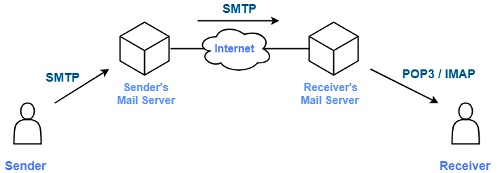
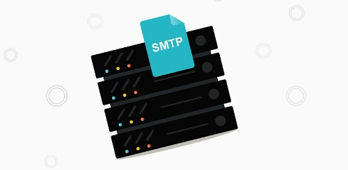

SMTP Email Server — It's History, and Use and Meaning for Emails
The Simple Mail Transfer Protocol (SMTP) has been around since the days of the Arpanet in the 1960s. It’s meant for sending emails using computers, and has evolved throughout the years to be the protocol on which all modern email services and applications rely.
Simple Mail Transfer Protocol
For more details regarding the history of SMTP email servers, access this content. We will provide thorough information about the SMTP equipment corresponding to your account.
SMTP revolutionised the Internet in the early 21st century, 3 decades ago. It's not obsolete now. What features of SMTP are still in place and are they to change in the future?

History of email and SMTP evolution
MIT was the first academic organisation to introduce email in the United States.
But that wasn't an email, as it permitted messages to be sent within a single device (computer). Back then, there were no networks and no email addresses.
In 1985, Tomlinson created an email that stood apart. He is often referred to as the first email user.
Jon Postel's work on the World Wide Web enabled him to develop the email system and encrypt SMTP. He named RFC 788 as the initial name in November 1981. It's now called Internet Official Protocol 4.
The rst universal electronic mail system, Sendmail, is still widely in use today.
SMTP has undergone negligible changes through the years. But, in the '80s, government-owned companies used webmail to obtain information, a convenient way to receive messages via email. SMTP was rapid and reliable, but lacked security and authorization.
As the World Wide Web developed, the SMTP protocol became more popular as the internet provided financial services. Commercial spam grew with the delivery of Internet services.
2014 was a watershed for growth-oriented mailing lists like (data encoded in) SMTP. RFC1869 detailed three substantive changes to ESMTP.
- HELO's new version allows SMTP servers to perform SMTP sessions. One party may use HELO or HELO to start the sessions.
- SMTP add-ons contain optional headers for EHLO directives.
- The TO and FROM parameters were expanded.
RFC 2476 was the first standard for SMTP email submission. It ceased requests for email transfers in 1998. SMTP was developed to transfer emails only among one company.
After the start of the 21st century, several concept drafts had to be revised for failing to feature the interests of the MCSA.
RFC 2554, a standard issued in 1999, defined the AUTH command and the authentication mechanism.
The most recent SMTP version came out in 2008.
SMTP server, SMTP relay, and other important SMTP-related terms
There are many questions about SMTP, such as SMTP server, SMTP relay, MTA, and many others. Understand the difference by investigating the SMTP system's functioning.
Web communication has been compared to postal mail. It is like messengers for servers, as well.
Comcast sends your email to its outgoing email. The From and To fields are set by the email address.
The driver could ship your package to your office using your email or cell phone.
This delivery address matches the theme of your email setup (IMAP or POP3). Delivery will coincide with the ship protocol you have chosen previously (truck or plane).

- An SMTP server provides the means to send email from an email client and senters (MUAs).
- SMTP relays allow you to expunge email from Gmail or Yahoo.
- MTA is a sendmail program used to handle email messages.
SMTP role, or other ways of sending emails
SMTP is also used for email. It's also used sometimes.
The API or SMTP setup will allow you to add your email.
The Email API is not allowed to send unsolicited email-only messages. SMTP is the typical protocol for sending content messages. The Email API is used for email advertising messages.
You can set up your email server using the services of a third party or your server, but you'll get an API key.
Browse through the information on these subjects.
- SMTP works well for occasional emails.
- Email API integration requires some programming skills.
- SMTP is easy to use, easy to configure, and easy-to-use.
- Email API provides more deliverability and analytics options.
- SMTP is commonly used when setting up email with customers.
- Email API is a common tool for application and bulk senders.
In conclusion, SMTP, which stands for Simple Mail Transfer Protocol, is an email protocol that allows emails to be exchanged on the Internet. The user can choose their email client, and SMTP handles the rest of the communication.